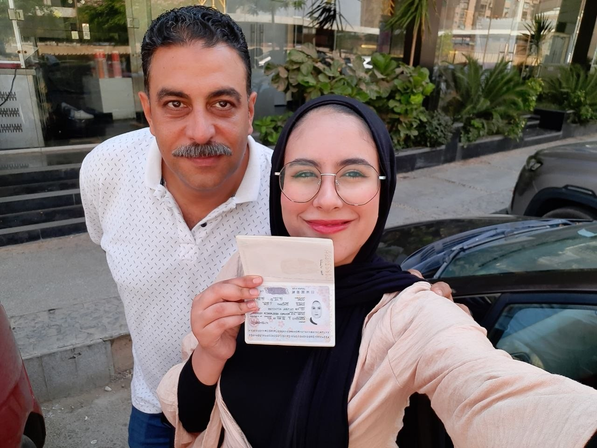

كل سنة وإنت ضهري وسندي
٤٨
سنة والدنيا
أحلى بيك.
وعشرين سنة وأنا محظوظة إني بنتك.
جمعتلك هنا صورنا، وضحكتنا، وكلام من قلبي…
عشان مهما بَعُدت المسافة، تعرف إنك دايمًا معايا.
بنتك، آية محمد زيان
تعالى نفتكر سوا ↓
ألبومنا، وجوابي ليك
كل صورة… حتة من قلبي.
الكلام اللي تحت الصور جواب واحد، من أوله لآخره.
اقراه بالترتيب، وافتح أي صورة عشان تشوفها أكبر.
فيه لحظات الصورة لوحدها ما تكفيهاش
ضحكتنا… بصوتها وحركتها.
ظرف أخير، من قلبي لقلبك
لسه عندي كلام ليك يا بابا.
كل اللي قريته بين الصور، جمعتهولك هنا.
عشان ترجعله في أي وقت تحب تسمع فيه قلبي.